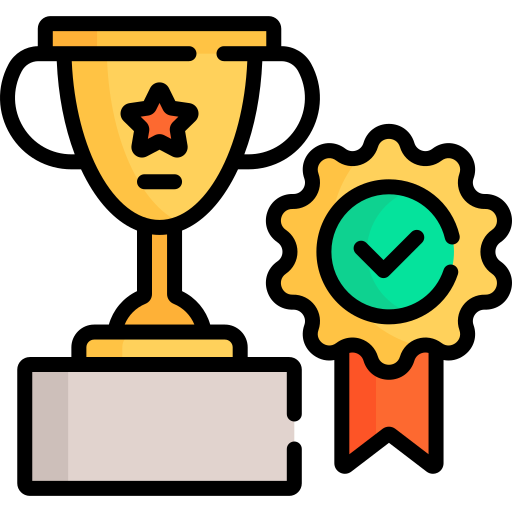

Experience

Welcome to my portfolio! As a Data Science graduate with expertise in data science, research, and data management,
I aim to apply my skills to improve program efficiency and operational effectiveness.
My focus is on enhancing data security and supporting data-driven decision-making through IT systems management within federal agencies.
With my background in data science and experience in research coordination, I have developed a strong skill set in managing and analyzing complex datasets.
At Cleveland Clinic and Retina Consultants of Nevada, I collaborated with principal investigators and sponsors, ensuring compliance with research protocols
while handling sensitive clinical data. I was responsible for patient screening, data collection, and specimen processing, which strengthened my ability to
manage large data systems while maintaining data accuracy and integrity. This hands-on experience with healthcare data has honed my skills in research,
data management, and drawing insights from clinical data, all essential for driving data-informed decisions.
Furthermore, my role as a Research Assistant at National University has been instrumental in supporting academics with grant pursuits and grant writing. This
experience has provided me with a unique perspective on the integration of data analytics to enhance grant proposals, ensuring that research projects are
well-supported by data-driven evidence and sound methodologies.
Moreover, my role as a Forensic Specialist at the Nevada Department of Health and Human Services reinforced my ability to apply data analytics in regulatory environments.
This experience, paired with my technical skills and commitment to improving program efficiency, positions me to contribute effectively in high-impact roles such as a
program analyst or data scientist within federal agencies. By leveraging data to inform policy and operational decisions, I am well-equipped to support federal initiatives
that rely on data-driven insights for success.
In addition to my practical experience, my educational focus on Database Analytics within my Master's in Data Science has equipped me with technical expertise in SQL, Python,
and machine learning. I’ve applied these skills in various data-driven projects, using statistical techniques to analyze both continuous and categorical data. My proficiency
in designing databases and employing machine learning algorithms allows me to build and refine predictive models for optimizing decision-making processes. This combination of
practical experience and technical knowledge enables me to tackle complex data challenges and develop solutions grounded in statistical rigor and advanced analytics.
Dean’s List Award - 2024
Member of Omega Nu Lambda - 2024
